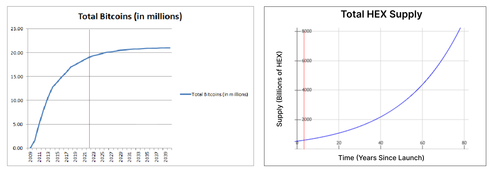

The 2021 crypto cycle was my first cycle ever, and HEX was by far my biggest position during it, which I invested the most time into.
Now, I no longer believe that HEX has long-term value. This post will be a “post-mortem of my HEX thesis” - I will break down the bull arguments for HEX and explain why I don’t believe in HEX anymore.
A Short Summary of HEX’s Bull-Narrative
HEX is very much a chameleon. It’s draped in all kinds of tricky arguments that misdirect your attention and seem true and bullish when considered in isolation. There’s always something that you can agree on among these arguments - and if not, you can probably at least agree with the founder of HEX on something. That’s what makes HEX so tricky.
At its core, the narrative of HEX is that it will overtake Bitcoin as the “best cryptocurrency”, and that you will make money from it.
Now, I will list the specific arguments Hexicans use to shill HEX. My list is by no means exhaustive but I think it covers most of the bases pretty well.
First, there is a laundry list of comparisons as to why HEX is a fundamentally better cryptocurrency than Bitcoin:
- HEX has secure, immutable, and audited code, whereas Bitcoin supposedly has “spaghetti code” that could have all kinds of bugs
- HEX pays its inflation to stakers, whereas Bitcoin pays miners to dump the price and pollute the environment
- HEX pays “trustless yield”, whereas Bitcoin does not
- HEX is new tech, Bitcoin is old tech and sucks
There are also arguments as to why HEX is fundamentally just “great”:
- HEX monetizes the time-value of money
- HEX is a certificate of deposit, on the blockchain
- HEX has yield, which is the first thing you should program in money
- HEX has 100% uptime
- HEX incentivizes delayed gratification, which is good for self-improvement
- HEX protects you from selling
- HEX is a “Nobel-prize-worthy economics breakthrough”
- HEX is secure, with a small attack surface
- HEX has a great name and great logo
- Hexicans are a “cult-like audience”, they love HEX, they get HEX tattoos!
There are arguments centered around profiting from interest in HEX:
- HEX pays 40% APY
- Long stakes pay exponentially more interest. The gains on a 15-year stake will be massive
- Even if the price stays the same or goes down a little bit I’ll be making so much yield that it’s still a good investment
There are also arguments as to why HEX will get more “adoption”:
- HEX has product-market fit
- HEX is being gatekept, and the gates can only open. HEX is pre-viral!
- We are getting adoption now, we are going to continue to get more adoption
- Bitcoin went up 2,000,000x and we can do the same thing
- Institutions want yield and will come stake HEX. There are massive pools of capital out there looking for yield. Capital goes to where it’s treated the best
There are also arguments regarding the founder of HEX and the OA, short for “Origin Address” (estimated to own 87% of the HEX supply, as far as the blockchain goes, in a 2021 audit):
- The founder is smart and rich and he will make us rich too
- The founder is rich and retired so he doesn’t need to sell
- The founder’s sacrifices help pump the HEX price by removing HEX supply
- The founder is honest and tells it straight
- The OA is benevolent and protects the price
- The OA implements “monetary policy” and helps keep the yield high which keeps HEX competitive
- The OA will pump the price and take us on a “magic carpet ride”
- Centralized ownership is good for the price. Just look at Tesla and Facebook!
The most important argument is of course based on HEX’s time-based staking. It goes like this: HEX pays its inflation to stakers who lock up their coins for long periods of time. Once a stake is made, the coins are truly locked as there is a penalty for ending a stake early. This design incentivizes people to hold their coins for long periods of time, which reduces supply that can be sold on the market, which helps the price go up.
It is a long list of arguments for sure. After writing this, I’m not surprised why people believe in HEX so strongly. Based on all these positive arguments for HEX, HEX seems like a rock-solid crypto and investment.
Breaking Down the B.S.
I’m not going to refute every single argument I listed above. But I will try to refute the key overarching themes.
Most of the arguments as to why HEX will succeed are very reflexive/circular, and thus rely on increasing prices. This includes any argument that requires a certain price level to be met, or extrapolates future adoption from current adoption. Generally, this includes arguments such as:
- HEX has product-market fit, HEX is pre-viral, HEX is being gatekept and the gates can only open
- HEX pays 40% APY, long stakes make exponentially increasing yield, even if the price stays the same the yield is so good
A lot of arguments as to why HEX is a fundamentally good crypto are actually just wordplay and/or incredibly insignificant. HEX is far from the only crypto to possess these “good qualities”. For example:
- HEX has secure, immutable, audited code
- HEX has 100% uptime, it’s never been hacked
- HEX pays trustless yield, it removes middlemen
- HEX has a great brand, name, and logo
Other arguments seem “bullish” but are just completely irrelevant to why HEX should have any value. They are literally memes:
- HEX monetizes the time-value of money
- HEX incentivizes delayed gratification, which is good for self-improvement
- HEX is a “Nobel-prize-worthy economic breakthrough”
- HEX is a certificate of deposit on the blockchain
HEX’s time-based staking is also a complete gimmick in my opinion. First of all, it’s impossible to enforce - there are already encapsulated/liquid staking contracts that have been built on top of HEX, such as Hedron and Maximus. But even without these contracts, its hypothetically possible to create stakes and then sell the private keys to them. Fundamentally, there’s no way to programmatically force a real-life person to truly be unable to access their tokens. They must maintain ownership of the locked tokens somehow, and that ownership can be transferred.
But time-based staking is a gimmick for what I believe is a much more fundamental reason - its stupid. In crypto we often talk about the whole world adopting our technology. Would the world population truly adopt a new money which is completely designed around losing access to your money for long periods of time? It seems ridiculous to me now. I think it has seemed ridiculous to every Hexican who first encountered it, but what happened is Hexicans “bought their own B.S.” - they bought into the bullish narrative, and with a massive amount of hope and emotional attachment at stake, “forced” themselves to believe time-based staking was good so that their behavior would be congruent with their beliefs. At least, I believe this is what most Hexicans went through - there were almost certainly some shrewd “Hexicans” who shilled the benefits of staking to others but made sure to keep their own HEX liquid.
Time-based staking may seem “righteous” and “moral” and “amazing” but it just doesn’t make sense.
A Better Way to Look At HEX
Instead of trying to refute each argument for HEX one-by-one, I think a better way to go about it is to start from scratch and try to build up.
At the end of the day, narratives can only go so far. Cryptos need exponentially increasing demand for prices to go higher. Eventually, the narrative will fade and people will need to agree HEX has real value for it to have sustainable demand. So, why does HEX have value?
From my current mental model of crypto, cryptos can have value in one of two ways:
- Becoming the world’s future money, and gaining a monetary premium (Ex: Bitcoin, maybe Ethereum)
- Creating something useful and then being able to charge some kind of fee to capture that value (Ex: Ethereum, Uniswap)
HEX doesn’t really fit into either of these two buckets. HEX is just another Bitcoin clone - of which there have been thousands. Yes, it’s wrapped in a nice new brand, with some unique tokenomics, with its own niche community, and nice narratives and memes. But its competing with all the other Bitcoin clones for being the world’s future money, and that’s what it is, a Bitcoin clone. Nothing more. And the market has shown us what it thinks of Bitcoin clones so far - today, Bitcoin remains the top crypto by market capitalization.
Additionally, one specific technical detail that I want to mention is that HEX’s supply is literally on an exponential growth curve - it doubles approximately every 20 years due to its compounding inflation rate. If this by itself doesn’t tell you its a worthless token I don’t know what else to say. It was designed from the start to be worthless.

A comparison of Bitcoin and HEX supply curves, with a red horizontal line depicting where we are today.
What I Really Think - Not Mincing Words
I don’t think HEX is a Bitcoin clone. I think HEX is a cash grab project with no value whatsoever.
HEX, PulseChain, and PulseX are all cash grab projects whose sole design intention, from the very beginning, was to make the founder money. Hexicans love to talk about how the OA has never sold any HEX, but actually the OA sold HEX in an year-long ICO - the Adoption Amplifier. Typically in ICOs, invested funds might go to some project treasury which is used to help grow the project. But in these projects, invested funds went straight into the pocket of the founder.
While investors are clinging onto their hopium narratives, the founder couldn’t care less about the outcome of the project after the AA and ICOs. This is because after the token sales, the founder has his investors’ money in his pocket.
That being said, I’m pretty certain that the founder also has an insider group who has been coordinatedly dumping HEX together. There are people on Twitter who show out their spoils from cashing out HEX who also were on early versions of the HEX website. I suspect that these insiders have got some legal entity setup like a trust or corporation that’s behind the OA wallets and protects the insiders’ funds and potentially reduces tax liability. I also suspect that these insiders may manipulate the price of HEX in the future (and may already have in the past) by buying tokens from themselves on the open market. All to cash out on more naive investors.
Also, I’d be very surprised if the founder hasn’t sold HEX from an undoxxed, personal wallet. Which Bitcoin free-claim wallets belong to him?
I would go as far as to say that HEX is a scam because the founder doesn’t believe in the entire narrative surrounding the project, and is thus dishonest. The founder, who was an early investor in Bitcoin, comes from a background of Bitcoin maximalism, and would never sell his Bitcoin for altcoins. He ignored other cryptos until he saw how much Ethereum increased in price and how much money people were making from ICOs. That, in my opinion, is what led him to start HEX and dishonestly tell people that HEX could be the next Bitcoin while creating the project only to pocket cash during the HEX ICO and then dump HEX on investors who continue to invest in the project afterwards.
I’ll end with an ironic anecdote from when I was writing this post. There was an interview Peter McCormack did with the founder of HEX a long time ago, where Peter just repeats that HEX is a scam. I remember watching this video at the start of my HEX journey, and thinking that this was evidence that HEX was a great project, because clearly Peter had “lost this debate”. But now that I’ve come full circle, I find myself seeing what Peter saw then - that HEX is just a dishonest cash-grab project.
Fin
I think I’ve covered what I wanted to say pretty well.
I think one elephant in the room that I haven’t addressed is that at this current moment in time, there are many people who made money from HEX, both real and on paper. In that sense, I would agree that HEX is not a complete scam like many other crypto scams, which have been rug-pulled early on. If I were to choose my words very carefully, I would say HEX is a fundamentally valueless and entirely speculative project designed as nothing more than a money-making cash-grab, yet marketed dishonestly as a truly innovative project. Which, when you think about it, is pretty much the same as most other crypto projects.
HEX is just not something I believe in anymore, and I can no longer recommend anyone to invest in it.
Thanks for reading!